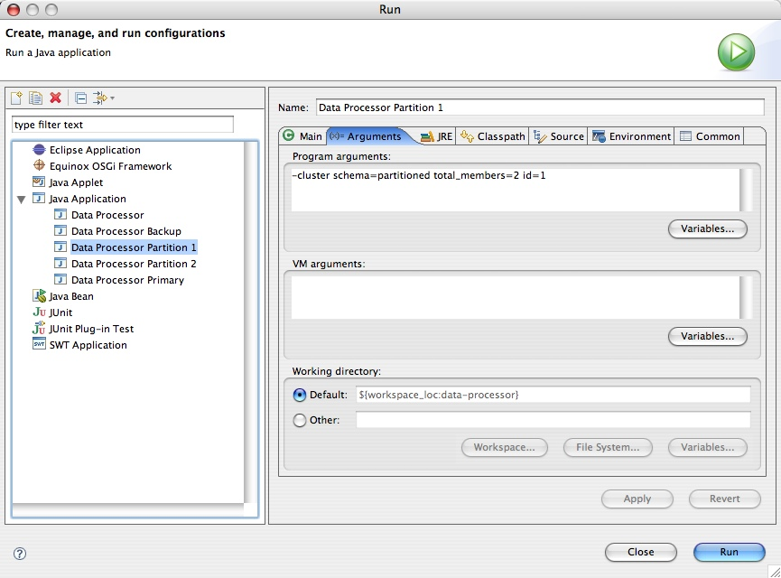
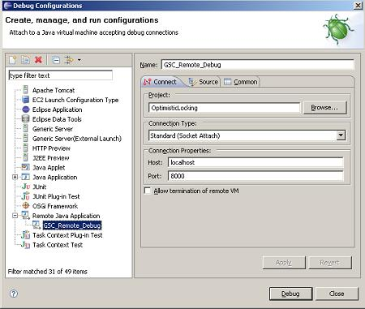
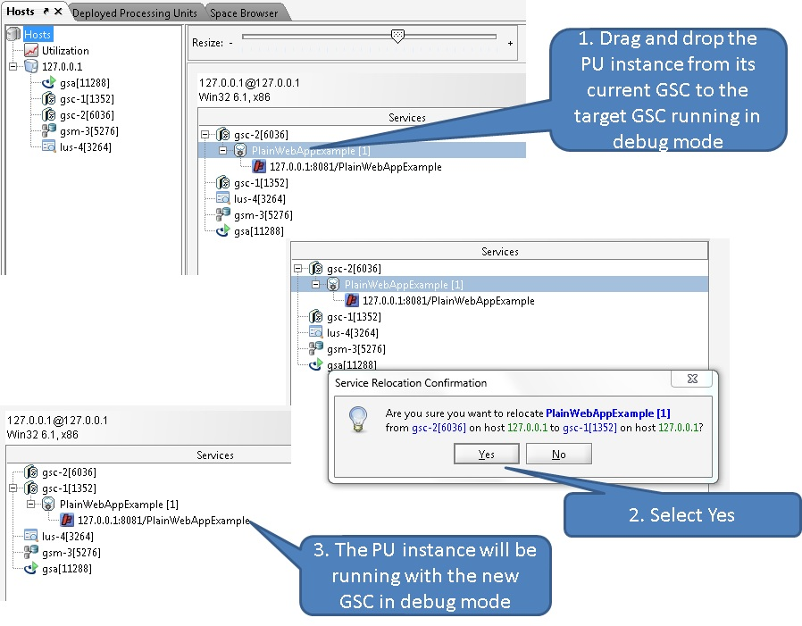

As part of your development process, you may want to run/debug your processing unit within your IDE, or create unit tests (with JUnit for example) to tests in isolation certain aspects of it.
The Integrated processing unit container allows you to run a processing unit within such "embedded" environment. It's implementation class is IntegratedProcessingUnitContainer.
The Integrated Processing Unit Container is built around Spring's ApplicationContext with several extensions relevant to GigaSpaces, such as ClusterInfo.
The Integrated Processing Unit Container runs directly in your IDE using its main() method, or can be started by another class in your code by using the ProcessingUnitContainerProvider abstraction.
The IntegratedProcessingUnitContainer class provides an executable main() method, allowing the IDE to run it directly via a simple Java application configuration. The main() method uses the IntegratedProcessingUnitContainerProvider class and program arguments in order to create the IntegratedProcessingUnitContainer. The following is a list of all the possible program arguments that can be specified to the IntegratedProcessingUnitContainer:
| Option | Description |
|---|---|
| -config [configLocation] | Allows you to set/add a processing unit deployment descriptor location. Follows the Spring Resource Loader including ant style patterns. This parameter can be specified multiple times. The default is classpath*:/META-INF/spring/pu.xml. |
| -cluster [cluster options] | Allows you to control the ClusterInfo injected into the container and the runtime topology of the processing unit (Note that the integrated processing unit container can run multiple processing unit instances in the same JVM to more accurately emulate the behavior of the actual runtime environment). The following options are available (they are used automatically by any embedded space included in the processing unit): * schema - the cluster schema used by the processing unit. Possible values are sync_replicated, async_replicated and partitioned* total_members - Determines the total members in the emulated cluster. Format is numberOfInstances[,numberOfBackups], e.g. total_members=2,1The number of backups per partition is zero or one. * id – If you want the container to run a single processing unit instance, use this parameter. It will force the container to run one instance and will determines the instance ID of that instance. * backup_id – If you want the container to run a single processing unit instance, use this parameter in conjunction with the id parameter. It will force the container to run one instance and will determines the backup ID of that instance. |
| -properties [property file location] | Allows you to inject properties to the processing unit at deployment time. |
| -properties embed://[property1 name]= [property1 value]; [property2 name]= [property2 value] |
Allows you to directly inject properties to the processing unit at startup time. |
To run a clustered PU with an embedded space with 2 partitions and a backup for each partition , having a separate eclipse configuration (and a hosting JVM) for each cluster member , have 3 run configuration each have the following:
-cluster schema=partitioned total_members=2,1 id=1
-cluster schema=partitioned total_members=2,1 id=2
-cluster schema=partitioned total_members=2,1 backup_id=1 id=1
-cluster schema=partitioned total_members=2,1 backup_id=1 id=2
Start these using the order above. The first 2 will be primary members and the other two will be backup members. You can terminate any of the primary instances to test failover scenario.
You can run the Integrated Processing Unit Container without actually specifying the instance id (and backup id). In this case, the container will automatically start all the relevant instances that form a complete cluster based on the _totalmembers parameter provided.
The main usage of the IntegratedProcessingUnitContainer is to execute processing units in your IDE.
The following screenshot displays the Create, manage, and run configurations Eclipse dialog for executing the processor processing unit:
In the screenshot above, we run the data processor module using the integrated processing unit container from within the Eclipse IDE (we simply imported the Eclipse project provided with the example into our Eclipse workspace). There are no arguments provided in this example, which means that the integrated processing unit container will use its defaults. Since our project source includes a META-INF/spring/pu.xml file, it is automatically detected by the IntegratedProcessingUnitContainer class and used as the processing unit's deployment descriptor (since it's part of the processor module's classpath). The processor Eclipse project also has all the required libraries in its project definition. These include all the jars located under the
The IntegratedProcessingUnitContainer is a simple class that wraps the processing unit with Spring application context and makes all the proper initializations around it. Note that as with any other code you run within your IDE, you will have to manually include the classes your processing unit code depends on in your project classpath. In contrast, when running your processing unit on the GigaSpaces service grid or in standalone mode, all of the JARs located under the processing unit's lib directory are automatically added to the classpath and GigaSpaces specific jar files (xap-datagrid.jar and xap-openspaces.jar are added automatically).
The following screenshot shows how to run a data processor instance with a partitioned cluster schema and ID 1, and the arguments that should provided in this configuration:

You can isolate your environment by defining Lookup Groups/Locators. You can set lookup groups/locators in your IDE run configuration using system variables as VM arguments. If you have
-Dcom.gs.jini_lus.groups=${env_var:To set the lookup locators:
-Dcom.gs.jini_lus.locators=${env_var:The integrated processing unit container can be created programmatically using the IntegratedProcessingUnitContainerProvider class. This is very useful when writing unit and integration tests (though Spring's own mock library can also be used for testing using pure Spring application context).
Here is an example of using a IntegratedProcessingUnitContainerProvider in order to create one:
IntegratedProcessingUnitContainerProvider provider = new IntegratedProcessingUnitContainerProvider();
// provide cluster information for the specific PU instance
ClusterInfo clusterInfo = new ClusterInfo();
clusterInfo.setSchema("partitioned");
clusterInfo.setNumberOfInstances(2);
clusterInfo.setInstanceId(1);
provider.setClusterInfo(clusterInfo);
// set the config location (override the default one - classpath:/META-INF/spring/pu.xml)
provider.addConfigLocation("classpath:/test/my-pu.xml");
// Build the Spring application context and "start" it
ProcessingUnitContainer container = provider.createContainer();
// ...
container.close();
When using a cluster and not specifying an instance Id (see setInstanceId()), the createContainer() method will return a CompoundProcessingUnitContainer filled with processing unit containers (IntegratedProcessingUnitContainer) for each instance in the cluster.
The Java Debugger (jdb) is a dynamic, controlled, assignment-based debugging tool. It helps find and fix bugs in the Java language programs both locally and on the server. To use jdb in a Java application you must first launch it with debugging enabled and attach to the Java process from the debugger through a JPDA port.
The default JPDA options for Java applications are as follows:
-agentlib:jdwp=transport=dt_socket,server=y,suspend=n,address=8000The jdb parameters specify the way the debugger will operate. For instance transport=dt_socket instructs the JVM that the debugger connections will be made through a socket while the address=8000 parameter informs it that the port number will be 8000. Similarly, if you substitute suspend=y , the JVM starts in suspended mode and stays suspended until a debugger is attached to it. This may be helpful if you want to start debugging as soon as the JVM starts.
Debugging your application running within the GSC is no different than debugging any other Java application. Make sure you launch the GSC with the required debugging arguments and attach a debugger. You should use the GSC gsc.sh or gsc.bat startup script found within the
The goal is to start and manage 1 GSC per host with JDPA options because each JVM started will need a different `address` port number to avoid port collision.
Once the application is deployed, you will the relocate the PU to the GSC that has debugging enabled.
Start an agent and deploy your PU as usual. The agent will start GSCs in non-debug mode.
Start a command window and set the
export set Start a GSC in debug mode:
./gsc.sh
gsc.bat
Make sure you see the Listening for transport dt_socket at address message:
C:\[%=Versions.gshome-directory%]-ga\bin>gsc.bat
Listening for transport dt_socket at address: 8000
Make sure you identify the process id of the newly started GSC. You will need it in step 7.
Open your eclipse and set up a remote debug configuration:

Set a break point.
Click the Debug button. The IDE will connect to the GSC.
Move a running PU instance to the newly started GSC. Use the GigaSpaces Management Center Hosts tab to move the PU instance by dragging and dropping the PU instance from its existing GSC to the newly started GSC running in debug mode. You can identify the GSC running in debug mode using its process id.

The debugger will stop at the specified break point once the relevant method will be triggered.